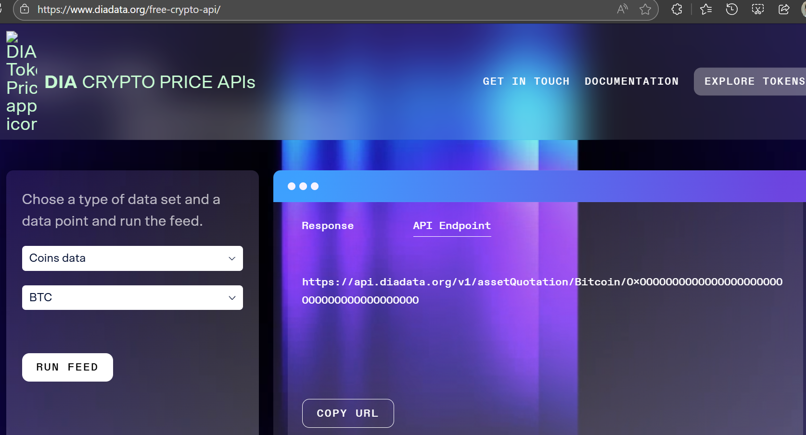
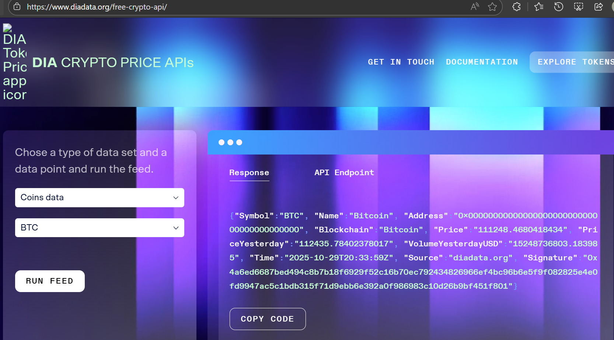
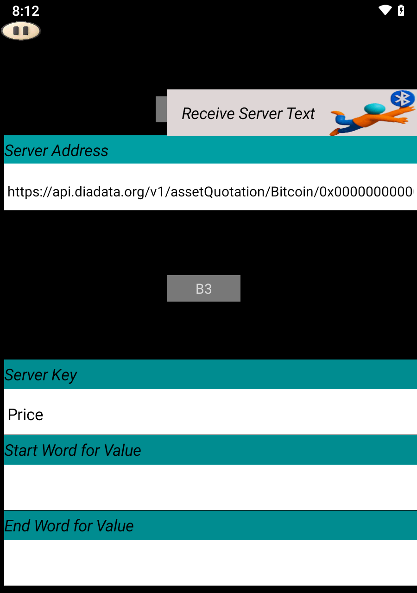

Visit the following site that offers free crypto data:
Select your desired coin (e.g., BTC) and click RUN FEED.
The API endpoint and keys like Price will be shown on the right.

In SoifGo, create a button and set its behavior to Receive Server Text.
Paste the API address into the Server Address field:
https://api.diadata.org/v1/assetQuotation/Bitcoin/0x0000000000000000000000000000000000000000Set the Server Key to Price or any other key you want to extract.

If the value is embedded in a long string like temp12_Abc, use filters:
temp_AbcThis will extract only 12 and hide the rest.

To trigger visual effects, set button behavior to Receive Server Value.
Define a Maximum Value and configure effects in the menu.
For more on effects, visit: